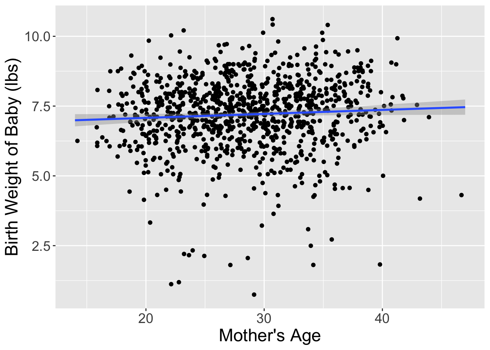
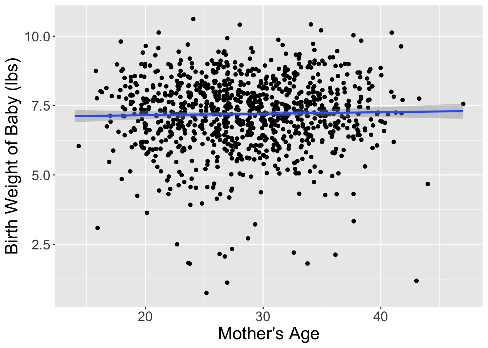
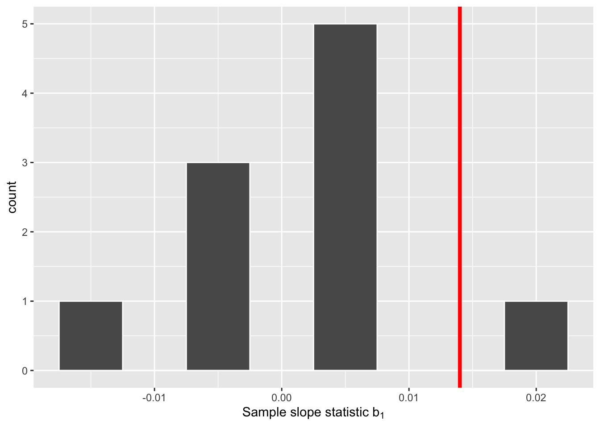
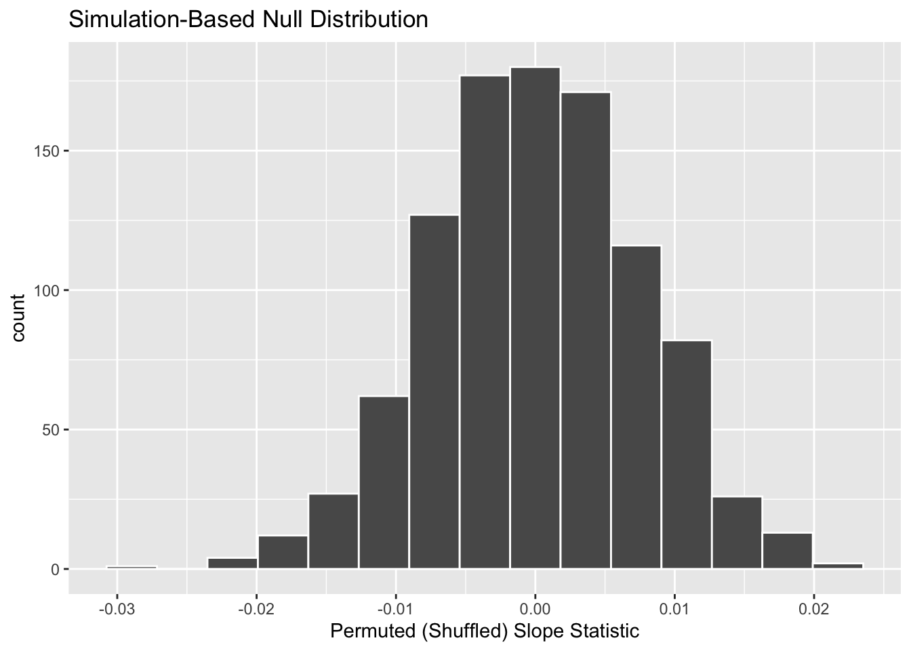
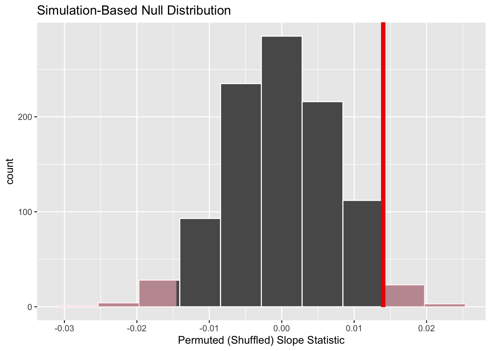
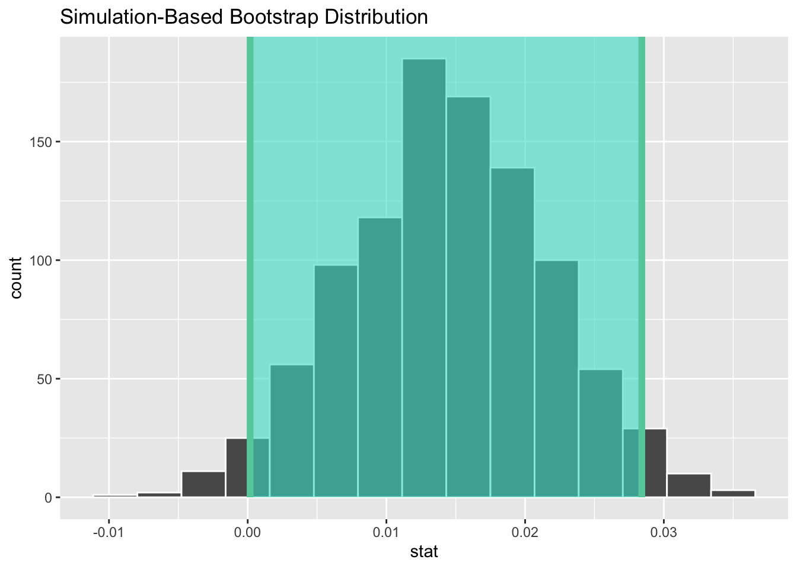
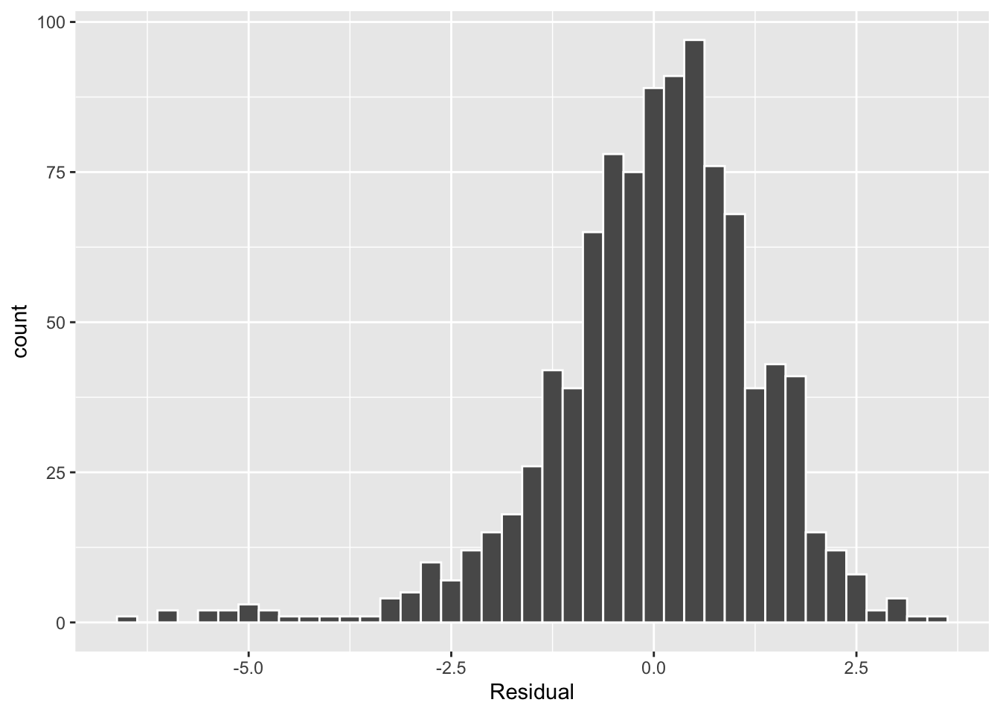

Week 8 – Hypothesis Test for Slope & Inference Conditions
In this week’s coursework we are finally talking about p-values! What we learned last week should have helped make the connection between a sampling distribution and a bootstrap (resampling) distribution. Hopefully, you understand that we create confidence intervals based the statistics we saw in other samples.
This week we are going to connect these ideas to the framework of hypothesis testing. Hypothesis testing requires an additional component we didn’t see last week—the null hypothesis. We will learn how we integrate the null hypothesis in our resampling procedure to create a sampling distribution that could have happened if the null hypothesis was true. We will use this distribution to compare what we saw in our data and evaluate the plausibility of competing hypotheses.
This reading will walk you through the general framework for understanding hypothesis tests. By understanding this general framework, you’ll be able to adapt it to many different scenarios. The same can be said for confidence intervals. There was one general framework that applies to all confidence intervals. I believe this focus on the conceptual framework is better for long-term learning than focusing on specific details for specific instances.
Note
This week’s reading is a compilation of Chapter 8 from ModernDive (Kim et al. 2020), Chapter 24 from Introduction to Modern Statistics (Çetinkaya-Rundel and Hardin 2023), with a smattering of my own ideas.
0.1 Reading Guide
Download the reading guide as a Word Document here
1 Birth weights & mother’s age
Last week we considered the question of assessing the relationship between a baby’s birth weight and the age of the mother. To explore this relationship, we used the births14 dataset–a random sample of 1,000 cases from a large public dataset of all US birth records released in 2014.
1.1 Observed data
Figure 1 visualizes the relationship between mage and weight for this sample of 1,000 birth records.
ggplot(data = births14,
mapping = aes(x = mage, y = weight)) +
geom_jitter() +
geom_smooth(method = "lm") +
labs(x = "Mother's Age",
y = "Birth Weight of Baby (lbs)") +
my_theme

Table 1 displays the estimated regression coefficients for modeling the relationship between mage and weight for this sample of 1,000 birth records.
births_lm <- lm(weight ~ mage, data = births14)
get_regression_table(births_lm)| term | estimate |
|---|---|
| intercept | 6.793 |
| mage | 0.014 |
Based on these coefficients, the estimated regression equation is:
\[ \widehat{\text{birth weight}} = -6.793 + 0.014 \times \text{mother's age}\]
Based on the regression equation, it appear that for every year older a mother is, we would expect the mean birth weight to increase by approximately 0.014 lbs. This seems like a small value, which is confirmed when we increase the mother’s age by 10-years, which is associated with a 0.14 lb increase in birth weight.
1.2 Research question
This raises the question of whether this change is “large1 enough” to suggest that there is a relationship between the birth weight of a baby and the age of the mother. Could we obtain a slope statistic of 0.014 occur just by chance, in a hypothetical world where there is no relationship between a baby’s birth weight and a mother’s age? In other words, what role does sampling variation play in this hypothetical world? To answer this question, we’ll again rely on a computer to run simulations.
1.3 Simulating data
First, try to imagine a hypothetical universe where there is no relationship between the birth weight of a baby and a mother’s age. In such a hypothetical universe, the birth weight of a baby would be entirely determined from other variables (e.g., genetics, mother’s habits, etc.)
Bringing things back to the births14 data frame, the mage variable would thus be an irrelevant label, as is has no relationship with the birth weight of the baby. Since is has no bearing on the birth weight, we could randomly reassign these ages by “shuffling” them!
To illustrate this idea, let’s narrow our focus to six arbitrarily chosen birth records (of the 1,000) Table 2. The weight column displays the birth weight of the baby. The mage column displays the age of the mother. However, in our hypothesized universe there is no relationship between a baby’s birth weight and a mother’s age, so it would be of no consequence to randomly “shuffle” the values of mage. The shuffled_mage column shows one such possible random shuffling.
| ID | weight | mage | shuffled_mage |
|---|---|---|---|
| 726 | 8.75 | 18 | 26 |
| 602 | 8.53 | 32 | 22 |
| 326 | 6.81 | 28 | 24 |
| 79 | 7.01 | 22 | 18 |
| 974 | 6.03 | 24 | 32 |
| 884 | 6.32 | 26 | 28 |
Again, such random shuffling of the mage label only makes sense in our hypothesized universe where there is no relationship between the birth weight of a baby and a mother’s age. How could we extend this shuffling of the mage variable to all 1,000 birth records by hand?
One way would be writing the 1,000 weights and mages on a set of 1,000 cards. We would then rip each card in half, as we are assuming there is no relationship between these variables. We would then be left with 1,000 weight cards in one hat and 1,000 mage cards in a different hat. You could then draw one card out of the weight hat and one card out of the mage hat and staple them together to make a new (weight, mage) ordered pair. This process of drawing one card out of each hat and stapling them together would be repeated until we had paired each mage card with a new weight card.
I’ve done one such reshuffling and plotted the original dataset and the shuffled dataset side-by-side in Figure 2. It appears that the slope of the regression line for the shuffled data is much less steep (closer to horizontal) than in the original data.


Let’s compare these slope estimates between the two datasets:
shuffled_births14 %>%
specify(response = weight, explanatory = mage) %>%
calculate(stat = "slope")Response: weight (numeric)
Explanatory: mage (numeric)
# A tibble: 1 × 1
stat
<dbl>
1 0.0142So, in this hypothetical universe where there is no relationship between a baby’s birth weight and a mother’s age, we obtained a slope of 0.014.
Notice that this slope statistic is not the same as the slope statistic of 0.014 that we originally observed. This is once again due to sampling variation. How can we better understand the effect of this sampling variation? By repeating this shuffling several times!
1.4 Shuffling 10 times
Alright, I’ve carried out the process of shuffling the dataset 9 more times. Table 3 displays the results of these shufflings.
| ID | weight | mage | shuffle1 | shuffle2 | shuffle3 | shuffle4 | shuffle5 | shuffle6 | shuffle7 | shuffle8 | shuffle9 | shuffle10 |
|---|---|---|---|---|---|---|---|---|---|---|---|---|
| 744 | 10.13 | 30 | 37 | 35 | 28 | 33 | 24 | 22 | 23 | 37 | 28 | 31 |
| 426 | 5.94 | 36 | 26 | 27 | 33 | 23 | 36 | 33 | 34 | 23 | 19 | 26 |
| 144 | 5.07 | 23 | 36 | 33 | 30 | 27 | 37 | 23 | 38 | 23 | 34 | 20 |
| 132 | 5.97 | 28 | 27 | 22 | 31 | 20 | 26 | 28 | 27 | 33 | 29 | 27 |
| 244 | 6.50 | 25 | 33 | 20 | 30 | 23 | 36 | 23 | 22 | 30 | 39 | 36 |
| 581 | 7.28 | 29 | 19 | 27 | 33 | 38 | 22 | 35 | 32 | 27 | 27 | 14 |
For each of these 10 shuffles, I computed the slope statistic, and in Figure 3 I display their distribution in a histogram. I’ve also marked the observed slope statistic with a dark red line.

Before we discuss the distribution of the histogram, we need to remember one key detail: this histogram represents relationship between a baby’s birth weight and mother’s age that one would observe in our hypothesized universe where there is no relationship between these variables.
Observe first that the histogram is roughly centered at 0, which makes sense. A slope of 0 means there is no relationship between a baby’s birth weight and mother’s age, which is exactly what our hypothetical universe assumes!
However, while the values are centered at 0, there is variation about 0. This is because even in a hypothesized universe of no relationship between a baby’s birth weight and mother’s age, you will still likely observe a slight relationship because of chance sampling variation. Looking at the histogram in Figure 3, such differences could even be as extreme as 0.02.
Turning our attention to what we observed in the births14 dataset: the observed slope of 0.014 is is marked with a vertical dark line. Ask yourself: in a hypothesized world of no relationship between a baby’s birth weight and mother’s age, how likely would it be that we observe this slope statistic? That’s hard to say! It looks like there is only one statistic larger than the observed statistic out of ten, but that means we would expect to see a statistic bigger than what we saw 10% of the time in this hypothetical universe. To me, something happening 10% of the time doesn’t seem like a rare event.
1.5 What just happened?
What we just demonstrated in this activity is the statistical procedure known as hypothesis testing using a permutation test. The term ““permutation” is the mathematical term for “shuffling”: taking a series of values and reordering them randomly, as you did with the mage values.
In fact, permutations are another form of resampling, like the bootstrap method you performed last week. While the bootstrap method involves resampling with replacement, permutation methods involve resampling without replacement.
Think back to the exercise involving the slips of paper representing the 1,000 birth records from last week. After sampling a paper, you put the paper back into the hat. However, in this scenario, once we drew a weight and age card they were stapled together and never redrawn.
In our example, we saw that the observed slope in the births14 dataset was somewhat inconsistent with the hypothetical universe, but only slightly. Thus, I would not be inclined to say that the observed relationship between a baby’s birth weight and a mother’s age (seen in the births14 dataset) is that different from what I would expect to see if there was no relationship between these variables.
2 Hypothesis tests
Much like the terminology, notation, and definitions relating to sampling you saw last week, there are a lot of terminology, notation, and definitions related to hypothesis testing as well. Learning these may seem like a very daunting task at first. However, with practice, practice, and more practice, anyone can master them.
First, a hypothesis is a statement about the value of an unknown population parameter. In our example, our population parameter of interest is the slope of the relationship between baby’s birth weight and mother’s age for every baby born in the US in 2014. This parameter is notated with \(\beta_1\). Hypothesis tests can involve any of the population parameters. You may have seen hypothesis tests for means or proportions previously, and later in this class we will discuss tests for many means (ANOVA).
Second, a hypothesis test consists of a test between two competing hypotheses: (1) a null hypothesis \(H_0\) (pronounced “H-naught”) versus (2) an alternative hypothesis \(H_A\) (sometimes denoted \(H_1\)).
Generally the null hypothesis is a claim that there is “no effect” or “no relationship.” In many cases, the null hypothesis represents the status quo or a situation that nothing interesting is happening. Furthermore, generally the alternative hypothesis is the claim the experimenter or researcher wants to establish or find evidence to support. It is viewed as a “competing” hypothesis to the null hypothesis \(H_0\). In our birth weights example, an appropriate hypothesis test would be:
\(H_0:\) there is no relationship between a baby’s birth weight and a mother’s age
\(H_A:\) there is a relationship between a baby’s birth weight and a mother’s age
Note some of the choices we have made. First, we set the null hypothesis \(H_0\) to be that there is no relationship between a baby’s birth weight and a mother’s age and the competing alternative hypothesis \(H_A\) to be that there is a relationship between a baby’s birth weight and a mother’s age. While it would not be wrong in principle to reverse the two, it is a convention in statistical inference that the null hypothesis is set to reflect a “null” situation where “nothing is going on.”
As we discussed earlier, in this case, \(H_0\) corresponds to there being no relationship between a baby’s birth weight and a mother’s age. Furthermore, we set \(H_A\) to be that there is a relationship between a baby’s birth weight and a mother’s age, which does not state what direction that relationship may be. This is called a two-sided alternative, whereas an alternative hypothesis which indicates the direction of the relationship (e.g., as age increases birth weight decreases) is called a one-sided alternative.
We can re-express the formulation of our hypothesis test using the mathematical notation for our population parameter of interest, the slope of the relationship between a baby’s birth weight and a mother’s age for all babies born in the US in 2014 – \(\beta_1\):
\(H_0: \beta_1 = 0\)
\(H_A: \beta_1 \neq 0\)
Observe how the alternative hypothesis \(H_A\) is two-sided with \(\beta_1 \neq 0\). Had we opted for a one-sided alternative, we would have set \(\beta_1 > 0\) or \(\beta_1 > 0\). To keep things simple for now, we’ll stick with the simpler two-sided alternative. We will discuss why I believe it is better for science to do two-sided tests later this week in your Statistical Critique.
Third, a test statistic is a point estimate / sample statistic formula used for hypothesis testing. Note that a sample statistic is merely a summary statistic based on a sample of observations. Fourth, the observed test statistic is the value of the test statistic that we observed in real life. In our case, we computed this value using the data saved in the births14 data frame. It was the observed slope for the relationship between baby birth weights and mother’s age \(b_1 =\) 0.014.
Fifth, the null distribution is the sampling distribution of the test statistic assuming the null hypothesis \(H_0\) is true. Ooof! That’s a long one! Let’s unpack it slowly. The key to understanding the null distribution is that the null hypothesis \(H_0\) is assumed to be true. We’re not saying that \(H_0\) is true at this point, we’re only assuming it to be true for hypothesis testing purposes. In our case, this corresponds to our hypothesized universe of no relationship between baby birth weights and mother’s age. Assuming the null hypothesis \(H_0\), also stated as “Under \(H_0\),” how does the test statistic vary due to sampling variation? In our case, how will the slope statistics \(b_1\) vary due to sampling under \(H_0\)? Recall from last week that distributions displaying how point estimates vary due to sampling variation are called sampling distributions. The only additional thing to keep in mind about null distributions is that they are sampling distributions assuming the null hypothesis \(H_0\) is true.
In our case, we previously visualized a null distribution in Figure 3, which we re-display in Figure 4 using our new notation and terminology. It is the distribution of the 10 sample slopes computed assuming a hypothetical universe of no relationship between baby birth weights and mother’s age. I’ve marked the value of the observed test statistic of 0.014 with a vertical line.

Sixth, the \(p\)-value is the probability of obtaining a test statistic just as extreme or more extreme than the observed test statistic assuming the null hypothesis \(H_0\) is true. Double ooof! Let’s unpack this slowly as well. You can think of the \(p\)-value as a quantification of “surprise”: assuming \(H_0\) is true, how surprised are we with what we observed? Or in our case, in our hypothesized universe of no relationship between baby birth weights and mother’s age, how surprised are we that we observed a slope statistic 0.014 from our collected samples assuming \(H_0\) is true? Very surprised? Somewhat surprised? Not surprised?
The \(p\)-value quantifies this probability, or in the case of our 10 slope statistics in Figure 4, what proportion had a more “extreme” result? Here, extreme is defined in terms of the alternative hypothesis \(H_A\) that there is a relationship between baby birth weights and mother’s age, which does not state a direction. So, we need to look for statistics in both tails, for positive relationships and negative relationships.
Accepting the null
Careful! Failing to reject the null hypothesis is not the same as accepting the null hypothesis! You cannot state that someone is innocent just because there was not sufficient evidence they were guilty.
In this case, 1 times out of 10, we obtained a difference in proportion greater than or equal to the observed slope of 0.014. As I suggested before, this event doesn’t seem that rare as it could occur 10% of the time. As our observed slope is not vastly different from what we would expect to occur if the null was true, we should fail to reject the hypothesized universe.
Seventh and lastly, in many hypothesis testing procedures, it is commonly recommended to set the significance level of the test beforehand. It is denoted by the Greek letter \(\alpha\) (pronounced “alpha”). This value acts as a cutoff on the \(p\)-value, where if the \(p\)-value falls below \(\alpha\), we would “reject the null hypothesis \(H_0\).” Alternatively, if the \(p\)-value does not fall below \(\alpha\), we would “fail to reject \(H_0\).”
While different fields tend to use different values of \(\alpha\), some commonly used values for \(\alpha\) are 0.1, 0.01, and 0.05; with 0.05 being the choice people often make without putting much thought into it. We’ll talk more about \(\alpha\) significance levels in Section 4, but first let’s fully conduct the hypothesis test corresponding to our births14 example using the infer package.
3 Conducting a hypothesis test using infer
Last week, you learned how to to construct confidence intervals using the infer R package. The infer package contains a workflow for constructing confidence intervals which emphasizes each of the steps in the underlying process. In Figure 5, we see that this workflow is comprised of functions whose names describe what they do:
specify()the variables of interest in your data frame.generate()replicates of bootstrap resamples with replacement.calculate()the summary statistic of interest.visualize()the resulting bootstrap distribution and confidence interval.

This week, we’ll see how we can modify this process to instead conduct hypothesis tests. You’ll notice that the basic outline of the workflow is almost identical, except for an additional hypothesize() step between the specify() and generate() steps, as can be seen in Figure 6.

Throughout this section, we’ll use a pre-specified significance level \(\alpha\) = 0.05 for our hypothesis tests. I’ll leave the discussion on the choice of this \(\alpha\) value until later on in Section 4.3.
3.1 specify() variables
Recall that we use the specify() verb to specify the response variable and, if needed, any explanatory variables for our study. In this case, since we are interested in the linear relationship between a baby’s birth weight and a mother’s age, we set weight as the response variable and mage as the explanatory variable.
births14 %>%
specify(response = weight, explanatory = mage) Response: weight (numeric)
Explanatory: mage (numeric)
# A tibble: 1,000 × 2
weight mage
<dbl> <dbl>
1 6.96 34
2 8.86 31
3 7.51 36
4 6.19 16
5 6.75 31
6 6.69 26
7 6.13 36
8 6.74 24
9 8.94 32
10 9.12 26
# ℹ 990 more rowsAgain, notice how the births14 data itself doesn’t change, but the Response: weight (numeric) and Explanatory: mage (numeric) meta-data do. This is similar to how the group_by() verb from dplyr doesn’t change the data, but only adds “grouping” meta-data, as we saw in Week 3.
3.2 hypothesize() the null
In order to conduct hypothesis tests using the infer workflow, we need a new step not present for confidence intervals: hypothesize(). Recall from Section 2 that our hypothesis test was
\(H_0: \beta_1 = 0\)
\(H_A: \beta_1 \neq 0\)
In other words, the null hypothesis \(H_0\) corresponding to our “hypothesized universe” stated that there was no relationship between a baby’s birth weight and a mother’s age. We set this null hypothesis \(H_0\) in our infer workflow using the hypothesize() function. We do, however, need to declare what we are assuming about the relationship between our variables. For our regression we are assuming there is no relationship between our variables or that they are"independent".
births14 %>%
specify(response = weight, explanatory = mage) %>%
hypothesize(null = "independence")Response: weight (numeric)
Explanatory: mage (numeric)
Null Hypothesis: independence
# A tibble: 1,000 × 2
weight mage
<dbl> <dbl>
1 6.96 34
2 8.86 31
3 7.51 36
4 6.19 16
5 6.75 31
6 6.69 26
7 6.13 36
8 6.74 24
9 8.94 32
10 9.12 26
# ℹ 990 more rowsAgain, the data has not changed yet. In fact, we’ve just added one additional piece of meta-data the null hypothesis we are assuming.
3.3 generate() replicates
After we hypothesize() the null hypothesis, we generate() replicates of “shuffled” datasets assuming the null hypothesis is true. We do this by repeating the shuffling exercise you performed in Section 1.3 several times. Instead of merely doing it 10 times, let’s use the computer to repeat this 1000 times by setting reps = 1000 in the generate() function. However, unlike for confidence intervals where we generated replicates using type = "bootstrap" resampling with replacement, we’ll now perform shuffles/permutations by setting type = "permute". Recall that shuffles / permutations are a kind of resampling, but unlike the bootstrap method, they involve resampling without replacement.
births_generate <- births14 %>%
specify(response = weight, explanatory = mage) %>%
hypothesize(null = "independence") %>%
generate(reps = 1000, type = "permute")
births_generateResponse: weight (numeric)
Explanatory: mage (numeric)
Null Hypothesis: independence
# A tibble: 1,000,000 × 3
# Groups: replicate [1,000]
weight mage replicate
<dbl> <dbl> <int>
1 6.56 34 1
2 9 31 1
3 6.96 36 1
4 7.8 16 1
5 8.39 31 1
6 6.56 26 1
7 8.95 36 1
8 7.94 24 1
9 8.52 32 1
10 6.13 26 1
# ℹ 999,990 more rowsObserve that the resulting data frame has 1,000,000 rows. This is because we performed shuffles / permutations for each of the 1000 rows 1000 times and \(1,000,000 = 1000 \cdot 1000\). If you explore the births_generate data frame, you would notice that the variable replicate indicates which resample each row belongs to. So it has the value 1 1000 times, the value 2 1000 times, all the way through to the value 1000 1000 times.
3.4 calculate() summary statistics
Now that we have generated 1000 replicates of “shuffles” assuming the null hypothesis is true, let’s calculate() the appropriate summary statistic for each of our 1000 shuffles. From Section 2, point estimates related to hypothesis testing have a specific name: test statistics. Since the unknown population parameter of interest is the relationship between baby birth weights and mother’s ages for all births in the US in 2014, \(\beta_1\), the test statistic here is the sample slope, \(b_1\). For each of our 1000 shuffles, we can calculate this test statistic by setting stat = "slope".
Let’s save the result in a data frame called null_distribution:
null_distribution <- births14 %>%
specify(response = weight, explanatory = mage) %>%
hypothesize(null = "independence") %>%
generate(reps = 1000, type = "permute")%>%
calculate(stat = "slope")
null_distributionResponse: weight (numeric)
Explanatory: mage (numeric)
Null Hypothesis: independence
# A tibble: 1,000 × 2
replicate stat
<int> <dbl>
1 1 0.00258
2 2 0.00641
3 3 -0.00803
4 4 0.00647
5 5 -0.00373
6 6 -0.0193
7 7 -0.00970
8 8 0.00394
9 9 -0.0201
10 10 -0.00136
# ℹ 990 more rowsObserve that we have 1000 values of stat, each representing one instance of \(b_1\) in a hypothesized world of no relationship between these variables. Observe as well that we chose the name of this data frame carefully: null_distribution. Recall once again from Section 2 that sampling distributions when the null hypothesis \(H_0\) is assumed to be true have a special name: the null distribution.
What was the observed relationship between a baby’s birth weight and a mother’s age in the births14 dataset? In other words, what was the observed test statistic \(b_1\)? We could calculate this statistic two ways:
- fitting a
lm()and grabbing the coefficients usingget_regression_table() - using infer to
calculate()the observed statistic
Going with option two, the process would look like this:
obs_slope <- births14 %>%
specify(response = weight, explanatory = mage) %>%
calculate(stat = "slope") mage
0.014 3.5 visualize() the p-value
The final step is to measure how surprised we are by a slope of 0.014 in a hypothesized universe where there is no relationship between a baby’s birth weight and a mother’s age. If the observed slope of 0.014 is highly unlikely, then we would be inclined to reject the validity of our hypothesized universe.
We start by visualizing the null distribution of our 1000 values of \(b_1\) using visualize() in Figure 7. Recall that these are values of the sample slope assuming \(H_0\) is true.

Let’s now add what happened in real life to Figure 7, the observed slope for the relationship between baby birth weights and mother’s ages of 0.014. Instead of merely adding a vertical line using geom_vline(), let’s use the shade_p_value() function with obs_stat set to the observed test statistic (observed slope statistic) value we saved in obs_slope.
Furthermore, we’ll set the direction = "two-sided" reflecting our alternative hypothesis \(H_A: \beta_1 \neq 0\), stating that there is a relationship between a baby’s birth weight and a mother’s age. As stated in Section 2, a two-sided hypothesis test does not make any assumptions about the direction of the relationship, meaning \(\beta_1 < 0\) and \(\beta_1 > 0\) are equally plausible. So, when calculating statistics that are “more extreme” than what we observed, we need to look in both tails.
visualize(null_distribution, bins = 10) +
labs(x = "Permuted (Shuffled) Slope Statistic") +
shade_p_value(obs_stat = obs_slope, direction = "two-sided")

In the resulting Figure 8, the solid dark line marks 0.014. However, what does the shaded-region correspond to? This is the \(p\)-value. Recall the definition of the \(p\)-value from Section 2:
A \(p\)-value is the probability of obtaining a test statistic just as or more extreme than the observed test statistic assuming the null hypothesis \(H_0\) is true.
So judging by the shaded region in Figure 8, it seems we would somewhat rarely observe a slope statistic of 0.014 or more extreme in a hypothesized universe where there is no relationship between a baby’s birth weight and a mother’s age. In other words, the \(p\)-value is somewhat small. Hence, we might be inclined to reject this hypothesized universe, or using statistical language we would “reject \(H_0\).”
What fraction of the null distribution is shaded? In other words, what is the exact value of the \(p\)-value? We can compute it using the get_p_value() function with the same arguments as the previous shade_p_value() code:
# A tibble: 1 × 1
p_value
<dbl>
1 0.054Keeping the definition of a \(p\)-value in mind, the probability of observing a slope statistic as large as 0.014 or something more extreme due to sampling variation alone in the null distribution is 0.054 = 5.4%. Since this \(p\)-value is larger than our pre-specified significance level \(\alpha\) = 0.05, we fail to reject the null hypothesis \(H_0: \beta_1 = 0\). In other words, this \(p\)-value is not small enough to reject our hypothesized universe where there is no relationship between a baby’s birth weight and a mother’s age. Notice how our interpretation of this p-value does not state that we accept the null hypothesis. Rather, we have insufficient evidence to reject it. I will discuss these differences more in Section 4.1.
Observe that whether we reject the null hypothesis \(H_0\) or not depends in large part on our choice of significance level \(\alpha\), as if we had chosen an \(\alpha\) of 0.1, we would have had sufficient evidence to reject the null hypothesis. We’ll discuss this more in Section 4.2.
4 Interpreting a hypothesis test
Interpreting the results of hypothesis tests is one of the more challenging aspects of this method for statistical inference. In this section, we focus on ways to help with deciphering the process and address some common misconceptions.
4.1 Two possible outcomes
In Section 2, we mentioned that given a pre-specified significance level \(\alpha\) there are two possible outcomes of a hypothesis test:
- If the \(p\)-value is less than \(\alpha\), then we reject the null hypothesis \(H_0\) in favor of \(H_A\).
- If the \(p\)-value is greater than or equal to \(\alpha\), we fail to reject the null hypothesis \(H_0\).
Unfortunately, the latter result is often misinterpreted as “accepting the null hypothesis \(H_0\).” While at first glance it may seem that the statements “failing to reject \(H_0\)” and “accepting \(H_0\)” are equivalent, there actually is a subtle difference. Saying that we “accept the null hypothesis \(H_0\)” is equivalent to stating that “we think the null hypothesis \(H_0\) is true.” However, saying that we “fail to reject the null hypothesis \(H_0\)” is saying something else: “While \(H_0\) might still be false, we don’t have enough evidence to say so.” In other words, there is an absence of enough proof. However, the absence of proof is not proof of absence. 🧐
To further shed light on this distinction, let’s use the United States criminal justice system as an analogy. A criminal trial in the United States is a similar situation to hypothesis tests whereby a choice between two contradictory claims must be made about a defendant who is on trial:
- The defendant is truly either “innocent” or “guilty.”
- The defendant is presumed “innocent until proven guilty.”
- The defendant is found guilty only if there is strong evidence that the defendant is guilty. The phrase “beyond a reasonable doubt” is often used as a guideline for determining a cutoff for when enough evidence exists to find the defendant guilty.
- The defendant is found to be either “not guilty” or “guilty” in the ultimate verdict.
In other words, not guilty verdicts are not suggesting the defendant is innocent, but instead that “while the defendant may still actually be guilty, there wasn’t enough evidence to prove this fact.” Now let’s make the connection with hypothesis tests:
- Either the null hypothesis \(H_0\) or the alternative hypothesis \(H_A\) is true.
- Hypothesis tests are conducted assuming the null hypothesis \(H_0\) is true.
- We reject the null hypothesis \(H_0\) in favor of \(H_A\) only if the evidence found in the sample suggests that \(H_A\) is true. The significance level \(\alpha\) is used as a guideline to set the threshold on just how strong of evidence we require.
- We ultimately decide to either “fail to reject \(H_0\)” or “reject \(H_0\).”
So while gut instinct may suggest “failing to reject \(H_0\)” and “accepting \(H_0\)” are equivalent statements, they are not. “Accepting \(H_0\)” is equivalent to finding a defendant innocent. However, courts do not find defendants “innocent,” but rather they find them “not guilty.” Putting things differently, defense attorneys do not need to prove that their clients are innocent, rather they only need to prove that clients are not “guilty beyond a reasonable doubt”.
So going back to the births14 dataset, recall that our hypothesis test was \(H_0: \beta_1 = 0\) versus \(H_A: \beta_1 \neq 0\) and that we used a pre-specified significance level of \(\alpha\) = 0.05. We found a \(p\)-value of 0.054. Since the \(p\)-value was smaller than \(\alpha\) = 0.05, we rejected \(H_0\). In other words, we found needed levels of evidence in this particular sample to say that \(H_0\) is false at the \(\alpha\) = 0.05 significance level. We also state this conclusion using non-statistical language: we found enough evidence in this data to suggest that there was gender discrimination at play.
4.2 Types of errors
Unfortunately, there is some chance a jury or a judge can make an incorrect decision in a criminal trial by reaching the wrong verdict. For example, finding a truly innocent defendant “guilty”. Or on the other hand, finding a truly guilty defendant “not guilty.” This can often stem from the fact that prosecutors don’t have access to all the relevant evidence, but instead are limited to whatever evidence the police can find.
The same holds for hypothesis tests. We can make incorrect decisions about a population parameter because we only have a sample of data from the population and thus sampling variation can lead us to incorrect conclusions.
There are two possible erroneous conclusions in a criminal trial: either (1) a truly innocent person is found guilty or (2) a truly guilty person is found not guilty. Similarly, there are two possible errors in a hypothesis test: either (1) rejecting \(H_0\) when in fact \(H_0\) is true, called a Type I error or (2) failing to reject \(H_0\) when in fact \(H_0\) is false, called a Type II error. Another term used for “Type I error” is “false positive,” while another term for “Type II error” is “false negative.”
This risk of error is the price researchers pay for basing inference on a sample instead of performing a census on the entire population. But as we’ve seen in our numerous examples and activities so far, censuses are often very expensive and other times impossible, and thus researchers have no choice but to use a sample. Thus in any hypothesis test based on a sample, we have no choice but to tolerate some chance that a Type I error will be made and some chance that a Type II error will occur.
To help understand the concepts of Type I error and Type II errors, we apply these terms to our criminal justice analogy in Figure 9.

Thus a Type I error corresponds to incorrectly putting a truly innocent person in jail, whereas a Type II error corresponds to letting a truly guilty person go free. Let’s show the corresponding table in Figure 10 for hypothesis tests.

4.3 How do we choose alpha?
If we are using a sample to make inferences about a population, we run the risk of making errors. For confidence intervals, a corresponding “error” would be constructing a confidence interval that does not contain the true value of the population parameter. For hypothesis tests, this would be making either a Type I or Type II error. Obviously, we want to minimize the probability of either error; we want a small probability of making an incorrect conclusion:
- The probability of a Type I Error occurring is denoted by \(\alpha\). The value of \(\alpha\) is called the significance level of the hypothesis test, which we defined in Section 2.
- The probability of a Type II Error is denoted by \(\beta\). The value of \(1-\beta\) is known as the power of the hypothesis test.
In other words, \(\alpha\) corresponds to the probability of incorrectly rejecting \(H_0\) when in fact \(H_0\) is true. On the other hand, \(\beta\) corresponds to the probability of incorrectly failing to reject \(H_0\) when in fact \(H_0\) is false.
Ideally, we want \(\alpha = 0\) and \(\beta = 0\), meaning that the chance of making either error is 0. However, this can never be the case in any situation where we are sampling for inference. There will always be the possibility of making either error when we use sample data. Furthermore, these two error probabilities are inversely related. As the probability of a Type I error goes down, the probability of a Type II error goes up.
What is typically done in practice is to fix the probability of a Type I error by pre-specifying a significance level \(\alpha\) and then try to minimize \(\beta\). In other words, we will tolerate a certain fraction of incorrect rejections of the null hypothesis \(H_0\), and then try to minimize the fraction of incorrect non-rejections of \(H_0\).
So for example if we used \(\alpha\) = 0.01, we would be using a hypothesis testing procedure that in the long run would incorrectly reject the null hypothesis \(H_0\) one percent of the time. This is analogous to setting the confidence level of a confidence interval.
So what value should you use for \(\alpha\)? Different fields have different conventions, but some commonly used values include 0.10, 0.05, 0.01, and 0.001. However, it is important to keep in mind that if you use a relatively small value of \(\alpha\), then all things being equal, \(p\)-values will have a harder time being less than \(\alpha\). Thus we would reject the null hypothesis less often. In other words, we would reject the null hypothesis \(H_0\) only if we have very strong evidence to do so. This is known as a “conservative” test.
On the other hand, if we used a relatively large value of \(\alpha\), then all things being equal, \(p\)-values will have an easier time being less than \(\alpha\). Thus we would reject the null hypothesis more often. In other words, we would reject the null hypothesis \(H_0\) even if we only have mild evidence to do so. This is known as a “liberal” test.
5 Comparison with confidence intervals
One of the great things about the infer package is that we can jump seamlessly between conducting hypothesis tests and constructing confidence intervals with minimal changes! Recall the code from the previous section that creates the null distribution, which in turn is needed to compute the \(p\)-value:
To create the corresponding bootstrap distribution needed to construct a 95% confidence interval for \(\beta_1\), we only need to make two changes. First, we remove the hypothesize() step since we are no longer assuming a null hypothesis \(H_0\) is true. We can do this by deleting or commenting out the hypothesize() line of code. Second, we switch the type of resampling in the generate() step to be "bootstrap" instead of "permute".
bootstrap_distribution <- births14 %>%
specify(response = weight, explanatory = mage) %>%
# Change 1 - Remove hypothesize():
#hypothesize(null = "independence") %>%
# Change 2 - Switch type from "permute" to "bootstrap":
generate(reps = 1000, type = "bootstrap") %>%
calculate(stat = "slope")Using this bootstrap_distribution, let’s first compute the percentile-based confidence intervals, the same way we did last week:
# A tibble: 1 × 2
lower_ci upper_ci
<dbl> <dbl>
1 0.000174 0.0284Using our shorthand interpretation for 95% confidence intervals we learned last week, we are 95% “confident” that the relationship between baby birth weights and mother’s ages for all babies born in the US in 2014 is between (0.0002, 0.0284). Let’s visualize bootstrap_distribution and this percentile-based 95% confidence interval for \(\beta_1\) in Figure 11.

Notice a key value that is not included in the 95% confidence interval for \(\beta_1\): the value 0. In other words, a difference of 0 is not included in our net, suggesting that the slope of the regression line is not 0.
Tip
If there is no linear relationship between two variables, then as \(x\) increases nothing should happen with \(y\). This corresponds to the slope of the regression line being 0.
Since the bootstrap distribution appears to be roughly normally shaped, we can also use the standard error method as we did last week. In this case, we must specify the point_estimate argument as the observed slope statistic of 0.014. This value acts as the center of the confidence interval.
# A tibble: 1 × 2
lower_ci upper_ci
<dbl> <dbl>
1 -0.000150 0.0281Let’s visualize bootstrap_distribution again, but now the standard error based 95% confidence interval for \(\beta_1\) in Figure 12. Notice how the value 0 is included in our confidence interval, suggesting that there is not sufficient evidence to say there is a relationship between a baby’s birth weight and a mother’s age. This is the same conclusion we reached with our p-value!

6 Theory-based hypothesis tests & confidence intervals
We’ve so far focused only on obtaining confidence intervals and p-values using simulation-based methods, where we resampled from our original dataset. There is, however, another method we could have used to do both these things. This method is called a “theory-based” method, which relies on probability models, probability distributions, and a few assumptions to approximate the sampling and null distributions. This is in contrast to the approaches we’ve used thus far, where we relied on computer simulations to construct the bootstrap and null distribution.
These traditional theory-based methods have been used for decades mostly because researchers didn’t have access to computers that could run thousands of calculations quickly and efficiently. Now that computing power is much cheaper and more accessible, simulation-based methods are much more feasible. However, researchers in many fields continue to use theory-based methods. Hence, I make it a point to include an example here. As we’ll see in this section, any theory-based method is ultimately an approximation to the simulation-based method.
6.1 Interpreting regression tables
Previously, when we interpreted a regression table, like the one shown in Table 4, we focused entirely on the term and estimate columns. Let’s now shift our attention to the remaining columns: std_error, statistic, p_value, lower_ci and upper_ci.
| term | estimate | std_error | statistic | p_value | lower_ci | upper_ci |
|---|---|---|---|---|---|---|
| intercept | 6.793 | 0.208 | 32.651 | 0.000 | 6.385 | 7.201 |
| mage | 0.014 | 0.007 | 1.987 | 0.047 | 0.000 | 0.028 |
R, the programming language has been around since roughly 1997, a period when computers were not able to run the simulations we can today. Thus, the calculations R provides in the std_error, statistic, p_value, lower_ci and upper_ci columns are not found using simulation-based methods. Rather, R uses a theory-based approach using mathematical formulas. These formulas were derived in a time when computers didn’t exist, so it would’ve been incredibly labor intensive to run extensive simulations.
6.1.1 Standard error
The third column of the regression table in Table 4, std_error, corresponds to the standard error of our estimates. Recall the definition of standard error we saw last week:
The standard error is the standard deviation of any point estimate computed from a sample.
So what does this mean in terms of the fitted slope \(b_1\) = 0.014? This value is just one possible value of the fitted slope resulting from this particular sample of \(n\) = 1000 birth records. However, if we collected a different sample of \(n\) = 1000 birth records, we will almost certainly obtain a different fitted slope \(b_1\). This is due to sampling variability.
Say we hypothetically collected 1000 such birth records, computed the 1000 resulting values of the fitted slope \(b_1\), and visualized them in a histogram. This would be a visualization of the sampling distribution of \(b_1\), which we defined last week. Further recall that the standard deviation of the sampling distribution of \(b_1\) has a special name: the standard error.
Last week, we used the infer package to construct the bootstrap distribution for \(b_1\) in this case. Recall that the bootstrap distribution is an approximation to the sampling distribution in that they have a similar shape. Since they have a similar shape, they have similar standard errors. However, unlike the sampling distribution, the bootstrap distribution is constructed from a single sample, which is a practice more aligned with what’s done in real life.
Rather than resampling from our original sample to create a bootstrap distribution, we could have instead used theory-based methods to estimated the standard error of the sampling distribution. In particular, there is a formula for the standard error of the fitted slope \(b_1\):
\[\text{SE}_{b_1} = \dfrac{\dfrac{s_y}{s_x} \cdot \sqrt{1-r^2}}{\sqrt{n-2}}\]
As with many formulas in statistics, there’s a lot going on here, so let’s first break down what each symbol represents. First \(s_x\) and \(s_y\) are the sample standard deviations of the explanatory variable mage and the response variable weight, respectively. Second, \(r\) is the sample correlation coefficient between mage and weight. This was computed as 0.063. Lastly, \(n\) is the number of pairs of points (birth weight, mother’s age) in the births14 data frame, here 1000.
To put this formula into words, the standard error of \(b_1\) depends on the relationship between the variability of the response variable and the variability of the explanatory variable as measured in the \(s_y / s_x\) term. Next, it looks into how the two variables relate to each other in the \(\sqrt{1-r^2}\) term.
However, the most important observation to make in the previous formula is that there is an \(n - 2\) in the denominator. In other words, as the sample size \(n\) increases, the standard error \(\text{SE}_{b_1}\) decreases. Just as we demonstrated last week, when we increase our sample size the amount of sampling variation of the fitted slope \(b_1\) will depend on the sample size \(n\). In particular, as the sample size increases, both the sampling and bootstrap distributions narrow and the standard error \(\text{SE}_{b_1}\) decreases. Hence, our estimates of \(b_1\) for the true population slope \(\beta_1\) get more and more precise.
6.1.2 Test statistic
The fourth column of the regression table in Table 4, statistic, corresponds to a test statistic relating to the following hypothesis test:
\(H_0: \beta_1 = 0\)
\(H_A: \beta_1 \neq 0\)
Here, our null hypothesis \(H_0\) assumes that the population slope \(\beta_1\) is 0. If the population slope \(\beta_1\) is truly 0, then this is saying that there is no relationship between a baby’s birth weight and a mother’s age for all births in the US in 2014. In other words, \(x\) = mother’s age would have no associated effect on \(y\) = baby’s birth weight.
The alternative hypothesis \(H_A\), on the other hand, assumes that the population slope \(\beta_1\) is not 0, meaning it could be either positive or negative. This suggests either a positive or negative relationship between a baby’s birth weight and a mother’s age. Recall we called such alternative hypotheses two-sided.
Caution
By convention, all hypothesis testing for regression assumes two-sided alternatives.
The statistic column in the regression table is a tricky one, however. It corresponds to a standardized t-test statistic. The null distribution can be mathematically proven to be a \(t\)-distribution, under specific conditions (described in Section 7). R uses the following \(t\)-statistic as the test statistic for hypothesis testing:
\[ t = \dfrac{ b_1 - \beta_1}{ \text{SE}_{b_1}} \]
And since the null hypothesis \(H_0: \beta_1 = 0\) is assumed during the hypothesis test, the \(t\)-statistic becomes
\[ t = \dfrac{ b_1 - 0}{ \text{SE}_{b_1}} = \dfrac{ b_1 }{ \text{SE}_{b_1}} \]
What are the values of \(b_1\) and \(\text{SE}_{b_1}\)? They are in the estimate and std_error column of the regression table in Table 4. Thus the value of 1.987 in the table is computed as 0.014 / 0.007 = 2. Note there is a difference due to some rounding error here.
6.1.3 p-value
The fifth column of the regression table in Table 4, p_value, corresponds to the p-value of the hypothesis test \(H_0: \beta_1 = 0\) versus \(H_A: \beta_1 \neq 0\).
Again recalling our terminology, notation, and definitions related to hypothesis tests we introduced in Section 2, let’s focus on the definition of the \(p\)-value:
A p-value is the probability of obtaining a test statistic just as extreme or more extreme than the observed test statistic assuming the null hypothesis \(H_0\) is true.
Recall that you can intuitively think of the \(p\)-value as quantifying how “extreme” the observed fitted slope of \(b_1\) = 0.014 is in a “hypothesized universe” where there is no relationship between a baby’s birth weight and a mother’s age.
Tip
If you’re a bit rusty on the \(t\)-distribution, here is an article describing how degrees of freedom relate to the shape of the \(t\)-distribution.
More precisely, however, the \(p\)-value corresponds to how extreme the observed test statistic of 0.014 is when compared to the appropriate null distribution. Recall from Section 2, that a null distribution is the sampling distribution of the test statistic assuming the null hypothesis \(H_0\) is true. It can be mathematically proven that a \(t\)-distribution with degrees of freedom equal to \(df = n - 2 = 1000 - 2 = 998\) is a reasonable approximation to the null distribution, if certain conditions for inference are not violated. We will discuss these conditions shortly in Section 7.
6.1.4 Confidence interval
The two rightmost columns of the regression table in Table 4, lower_ci and upper_ci, correspond to the endpoints of the 95% confidence interval for the population slope \(\beta_1\). What are the calculations that went into computing the two endpoints of the 95% confidence interval for \(\beta_1\)?
Recall from the SE method for constructing confidence intervals, for any distribution that resemble a Normal Distribution2, we could use the empiracle rule to create a 95% confidence interval:
What is the value of the standard error \(SE_{b_1}\)? It is in fact in the third column of the regression table in Table 4: 0.007. Plugging in the respective values, we have:
0.014 \(\pm\) 0.007 \(\times\) 1.96
0.014 \(\pm\) 0.01372
(0.00028, 0.02772)
This closely matches the \((0,0.028)\) confidence interval in the last two columns of Table 4, with slight differences due to rounding.
Much like p-values, the results of this confidence interval also are only valid if the conditions for inference are not violated.
6.2 Conclusion
Don’t worry if you’re feeling a little overwhelmed at this point. There is a lot of background theory to understand before you can fully make sense of the equations for theory-based methods. That being said, theory-based methods and simulation-based methods for constructing confidence intervals and conducting hypothesis tests often yield consistent results. As mentioned before, in my opinion, two large benefits of simulation-based methods over theory-based are that (1) they are easier for people new to statistical inference to understand, and (2) they also work in situations where theory-based methods and mathematical formulas don’t exist.
6.3 Everything is one test
While this is a lot to digest, especially the first time you encounter hypothesis testing, the nice thing is that once you understand this general framework, then you can understand any hypothesis test. In a famous blog post, computer scientist Allen Downey called this the “There is only one test” framework, for which he created the flowchart displayed in Figure 13.

Notice its similarity with the “hypothesis testing with infer” diagram you saw in Figure 6. That’s because the infer package was explicitly designed to match the “There is only one test” framework. So if you can understand the framework, you can easily generalize these ideas for all hypothesis testing scenarios.
7 Checking Model Conditions
Recall last week how we stated that we could only use the standard-error-based method for constructing confidence intervals if the bootstrap distribution was bell shaped. Similarly, there are certain conditions that cannot be violated for the results of our hypothesis tests and confidence intervals to have meaning.
Caution
Notice how I’m saying the conditions cannot be viola ted and not that the conditions need to be met? To me, this language is very similar to the difference between failing to reject the null and accepting the null. Let’s pose these two options as hypotheses:
\(H_0\): the conditions are met
\(H_A\): the conditions are violated
If we have insufficient evidence to say that the conditions are violated, then that’s all we can say. We cannot say that the conditions are met, as that would be equivalent to saying that we’ve accepted our null hypothesis!
7.1 Conditions for regression
For inference for regression, there are four conditions that cannot be violated. Note the first four letters of these conditions are highlighted in bold in what follows: LINE. This can serve as a nice reminder of what to check for whenever you perform linear regression.
- Linearity of relationship between variables
- Independence of the residuals
- Normality of the residuals
- Equality of variance of the residuals
Conditions L, N, and E can be verified through what is known as a residual analysis. Condition I can only be verified through an understanding of how the data was collected.
7.1.1 Residuals refresher
Recall our definition of a residual: it is the observed value minus the fitted value denoted by \(y - \widehat{y}\). Recall that residuals can be thought of as the error or the “lack-of-fit” between the observed value \(y\) and the fitted value \(\widehat{y}\) on the regression line in Figure 1. In Figure 14, we illustrate one particular residual out of 1000 using an arrow, as well as its corresponding observed and fitted values using a circle and a square, respectively.

Furthermore, we can automate the calculation of all \(n\) = 1000 residuals by applying the get_regression_points() function to our saved regression model in births_lm. Observe how the resulting values of residual are roughly equal to mage - mage_hat (there is potentially a slight difference due to rounding error).
# Fit regression model:
births_lm <- lm(weight ~ mage, data = births14)
# Get regression points:
regression_points <- get_regression_points(births_lm)
regression_points# A tibble: 1,000 × 5
ID weight mage weight_hat residual
<int> <dbl> <dbl> <dbl> <dbl>
1 1 6.96 34 7.28 -0.317
2 2 8.86 31 7.23 1.63
3 3 7.51 36 7.31 0.204
4 4 6.19 16 7.02 -0.831
5 5 6.75 31 7.23 -0.484
6 6 6.69 26 7.16 -0.473
7 7 6.13 36 7.31 -1.18
8 8 6.74 24 7.14 -0.395
9 9 8.94 32 7.25 1.69
10 10 9.12 26 7.16 1.96
# ℹ 990 more rowsA residual analysis is used to verify conditions L, N, and E and can be performed using appropriate data visualizations. While there are more sophisticated statistical approaches that can also be done, we’ll focus on the much simpler approach of looking at plots.
7.1.2 Linearity of relationship
The first condition is that the relationship between the outcome variable \(y\) and the explanatory variable \(x\) must be Linear. Recall the scatterplot in Figure 1 where we had the explanatory variable \(x\) as mother’s age and the outcome variable \(y\) as baby’s birth weight. Would you say that the relationship between \(x\) and \(y\) is linear? It’s hard to say because of the scatter of the points about the line. In my opinion, this relationship is “linear enough.”
Let’s present an example where the relationship between \(x\) and \(y\) is clearly not linear in Figure 15. In this case, the points clearly follow a curved relationship, more closely resembling a logarithmic scale. In this case, any results from an inference for regression would not be valid.

7.1.3 Independence of residuals
The second condition is that the residuals must be Independent. In other words, the different observations in our data must be independent of one another.
For the evals dataset, while there is data on 463 courses, these 463 courses were actually taught by 94 unique instructors. In other words, the same professor is often included more than once in our data. For a professor in the evals data who taught multiple classes, it seems reasonable to expect that their teaching scores will be related to each other. If a professor gets a high score in one class, chances are fairly good they’ll get a high score in another. This dataset thus provides different information than if we had 463 unique instructors teaching the 463 courses.
In this case, we say there exists dependence between observations. So in this case, the independence condition is violated. The most appropriate analysis would take into account that we have repeated measures for the same profs, but that is beyond the scope of this class. What we could do, however, is devise a method to collapse the multiple observations for each professor into one observation. This could be done a variety of ways:
- randomly selecting one observation per professor
- taking the mean of their scores3
- selecting the maximum / minimum / median value
7.1.4 Normality of residuals
The third condition is that the residuals should follow a Normal distribution. Furthermore, the center of this distribution should be 0. In other words, sometimes the regression model will make positive errors: \(y - \widehat{y} > 0\). Other times, the regression model will make equally negative errors: \(y - \widehat{y} < 0\). However, on average the errors should equal 0 and their shape should be similar to that of a bell.
The simplest way to check the normality of the residuals is to look at a histogram, which we visualize in Figure 16.
regression_points <- get_regression_points(births_lm)
ggplot(data = regression_points,
mapping = aes(x = residual)) +
geom_histogram(binwidth = 0.25, color = "white") +
labs(x = "Residual")

This histogram shows that we have more negative residuals than negative. Since the residual \(y-\widehat{y}\) is negative when \(y < \widehat{y}\), it seems our regression model’s fitted baby birth weights (\(\widehat{y}\)) tend to overestimate the birth weight \(y\). Furthermore, this histogram has a left-skew in that there is a longer tail on the left. This is another way to say the residuals exhibit a negative skew.
Is this a problem? Again, there is a certain amount of subjectivity in the response. In my opinion, while there is a slight skew to the residuals, I don’t believe it is so bad that I would say this condition is violated. On the other hand, others might disagree with our assessment.
Let’s present examples where the residuals clearly do and don’t follow a normal distribution in Figure 17. In this case of the model yielding the clearly non-normal residuals on the right, any results from an inference for regression would not be valid.

7.1.5 Equality of variance
The fourth and final condition is that the residuals should exhibit Equal variance across all values of the explanatory variable \(x\). In other words, the value and spread of the residuals should not depend on the value of the explanatory variable \(x\).
Recall the scatterplot in Figure 1: we had the explanatory variable \(x\) of mother’s age on the x-axis and the outcome variable \(y\) of baby’s birth weight on the y-axis. Instead, let’s create a scatterplot that has the same values on the x-axis, but now with the residual \(y-\widehat{y}\) on the y-axis as seen in Figure 18.
ggplot(data = regression_points,
mapping = aes(x = mage, y = residual)) +
geom_point() +
labs(x = "Mother's Age", y = "Residual") +
geom_hline(yintercept = 0, col = "blue", size = 1)
You can think of Figure 18 a modified version of the plot with the regression line in Figure 1, but with the regression line flattened out to \(y=0\). Looking at this plot, would you say that the spread of the residuals around the line at \(y=0\) is constant across all values of the explanatory variable \(x\) of mother’s age? This question is rather qualitative and subjective in nature, thus different people may respond with different answers. For example, some people might say that there is slightly more variation in the residuals for ages between 20 and 40 than for ages below 20 and above 40. However, it can be argued that there isn’t a drastic non-constancy. Moreover, this could be an artifact of having smaller numbers of younger / older mothers in the sample.
In Figure 19 I present an example where the residuals clearly do not have equal variance across all values of the explanatory variable \(x\).

Observe how the spread of the residuals increases as the value of \(x\) increases. This is a situation known as heteroskedasticity. Any inference for regression based on a model yielding such a pattern in the residuals would not be valid.
7.1.6 What’s the conclusion?
Let’s list our four conditions for inference for regression again and indicate whether or not they were violated in our analysis:
- Linearity of relationship between variables: No
- Independence of residuals: No
- Normality of residuals: Slight left-skew, but not too concerning
- Equality of variance: No
So what does this mean for the results of our confidence intervals and hypothesis tests in Section 4? Since none of the conditions were viola ted, we can have faith in the confidence intervals and \(p\)-values calculated before. If, however, any of these conditions were violated, we would need to pause and reconsider our model.
When the Independence condition is violated, there exist dependencies between the observations in the dataset. To remedy this, you will need to use a statistical model which accounts for this dependency structure. One such technique is called hierarchical/multilevel modeling, which you may learn about in more advanced statistics courses.
When conditions L, N, E are violated, it often means there is a shortcoming in our model. For example, it may be the case that using only a single explanatory variable is insufficient. We may need to incorporate more explanatory variables in a multiple regression model as we did in previously, or perhaps use a transformation of one or more of your variables, or use an entirely different modeling technique. To learn more about addressing such shortcomings, you’ll have to take a class on or read up on more advanced regression modeling methods.
The conditions for inference in regression problems are a key part of regression analysis that are of vital importance to the processes of constructing confidence intervals and conducting hypothesis tests. However, it is often the case with regression analysis in the real world that some of these conditions may be violated. Furthermore, as you saw, there is a level of subjectivity in the residual analyses to verify the L, N, and E conditions. So what can you do? As a statistics educator, I advocate for transparency in communicating all results. This lets the stakeholders of any analysis know about a model’s shortcomings or whether the model is “good enough.” So while this checking of assumptions has lead to some fuzzy “it depends” results, we decided as authors to show you these scenarios to help prepare you for difficult statistical decisions you may need to make down the road.
8 References
Çetinkaya-Rundel, Mine, and Jo Hardin. 2023. Introduction to Modern Statistics. OpenIntro. https://openintro-ims.netlify.app/.
Kim, Albert Y., Chester Ismay, Starry Zhou, Marium Tapal, Dorothy Bishop, WatanabeSmith, Tobias Rockel, et al. 2020. Moderndive/ModernDive_book: Cleaned Bookdown Code, Typo Fixes, New Tips & Tricks Page. Zenodo. https://doi.org/10.5281/ZENODO.3932023.